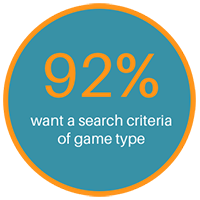

-

Roles
UX Design
Visual Design
Branding
-

Deliverables
User Surveys
Personas
Competitive Analysis
User Stories and Flows
Wireframes
Branding and Identity
User Testing
Visual Design
High Fidelity Prototype
-

Specs
Duration
2 weeks
Tools
Google Suite
Sketch
InVision
UsabilityHub
Adobe Illustrator & Photoshop
Trello & Visual Studio Team Services
Problem
When getting together for game night, it can be difficult to select what tabletop games to play for those users with a large game library. Manually searching games for number of players, user’s interests, and game duration can be a time-consuming and frustrating task.
Solution
Game Wizard aims to provide a quick and easy tool to select a compatible tabletop game for game night. It allows users to quickly build their game library and then search for games from their library based upon filters such as game type, number of players, and game duration, all with a clean and simple interface.
Competitive Analysis
For main functionality of Game Wizard—helping users pick a game—there are currently no solutions available. The competition in this related area are for game libraries and game stats. Since Game Wizard does have library storage functionality, the competitors for this feature were analyzed. View full competitive analysis.
Through this analysis it was discovered that an opportunity presented was that none of these competitors addressed the problem Game Wizard is solving. Also, there was an opportunity for doing so with a simple, intuitive, and organized interface.
User Surveys
Users were initially surveyed to gain insight into how the current user base felt about the problem Game Wizard was addressing, how the users liked to organize their game libraries, if at all, and what where their current pain points with the current options available. A follow up survey was conducted to explore what value users placed on a solution that met their needs. See full user survey analysis.
Features/Tools
Through this survey, presented to over sixty individuals, the following features were consistently marked as high importance for a tabletop game management and assistance app.
When searching for games to play, the highest ranking search criteria were, number of players (89%), game duration (59%), and game type (92%). Additionally, 59% of users wanted to know game difficulty.

Pain Points
Users main pain points with existing services are that they aren’t visually pleasing, have a frustrating UI, are difficult to search, and are time consuming for any data entry.
User Personas
Based upon the user survey results, two key personas were developed to highlight the most common user needs. The goal with the personas was to understand and empathize with the user’s needs and experiences in relation to how they would interact with the service.
Judy
Casual Gamer
- “The current options are too cluttered, hard to use from mobile devices, and take too long to find games and add to my collection.”
About
- Project Manager
- Age 40
- Female
- Arlington, VA
Bio
- Judy is a project manager who enjoys playing games with friends a couple times a month, reading, and brewing. She currently uses a website to keep track of her game library, but really doesn’t like the UI. She gets frustrated at how long it takes to find a game based on number of players and/or duration and wishes there was an easier way.
Goals
- Wants to find a game based on a criteria
- Having more time to play games and relax
- Keep track of what games she owns
Motivations
- A visually pleasing and easy UI
- Simple search and quick data entry
- Game selection assistance
Frustrations
- Lack of content organization and searching options
- Ugly and difficult UI
- Slow and difficult data entry
Evan
Frequent Gamer
- "I wish there was a good way to have better insight into my collection and have an easier way to select games to play.”
About
- Developer
- Age 33
- Male
- Redmond, WA
Bio
- Evan is a developer who enjoys spending his free time gaming with friends, checking out the latest movies, and playing exercise gaming apps. He doesn’t currently use a game tracking service because he hasn’t found anything he likes. He does use a simple game score app for easy score calculation, but doesn’t have a desire to log games.
Goals
- Keep track of owned games
- Search friends’ games
- Adding and viewing content when on the go
Motivations
- Free game tracking service
- Fast data entry
- Easy to use interfaces
Frustrations
- Lack of filtered searching options
- Lack of multiple platform support
- Slow data entry
User Stories
With the business requirements, and the motivations, goals, and pain points identified in the user personas, user stories were created for these tasks. View user stories and tasks.
User Flows
The resulting user flows built out from the highest priority user tasks guided the essentials of what Game Wizard’s MVP should contain. View the full set of sketches and final flows.
Sitemap
Following the user flows, a sitemap and content strategy was designed to visualize how all these user flows would integrate with each together in a simple functional site. View the full size of final sitemap and content strategy.
Wireframes
Before jumping into the low-fidelity wireframes, sketched versions were conceptualized to determine which layouts would best meet the needs of the users while remaining simple and easy to navigate. A quick round of paper prototype testing was used to identify any user flow problems before moving on to wireframes. Surprisingly, testers did not indicate there were any flow problems with the paper prototype.
Tasks tested includeds, sign up, adding games to library, viewing library, viewing game details, searching for a game, searching for a friend, viewing user details, viewing friend list, running the game wizard, viewing and navigating the wizard results, and viewing and editing user settings.
Overall, the experience of the users was mostly favorable. Through the low-fi wireframe testing process several issues were discovered and adjusted accordingly in future revisions. The top action items were: two buttons on the Game Wizard (home) page were confusing and possibly not needed, it was unclear how the friend search results would look/function due to missing views, and it was unclear how a game would be removed from a user’s library.
Branding
The different options of branding, how it related to the application’s function and intent, were explored through sketching, preference testing, and moodboard research. Keeping the main functionality of the app and theme in mind, “Game Wizard” was chosen as it succinctly describes the purpose of the app while also allowing for some fun imagery to be developed with the name. The feeling developed for this concept was fun, playful, fantasy, and helpful for imagery in the logo mark.
Preference testing was used to refine the design. Taking note of testers reactions, I ended up simplifying the character design. This in turn carried over to the logo design as the hat tied into that design. Additionally, several rounds of preference testing were used to narrow down the logo branding marks. Below are the design iteration progressions and quotes from preference testers.
With the logo finalized, the brand identity was built to complement and reinforce the feelings and functionality evoked through the Game Wizard logo. A style guide was developed for the brand.
High-Fidelity Design
As the product was converted to a high-fidelity prototype, preference testing was conducted to further refine the design for the most effective user experiences. Usability testing was performed to catch any issues and to gather more data on how users experienced the app.
The top action items users identified as needing further attention: remove search on wizard page, redesign the progress bar, remove the redundant text “search to add friends”, adjust placement of “remove from library” link.
With this user feedback, these action items were addressed and applied to the final design.
The action item of the two buttons on the Game Wizard (home) page were confusing and possibly not needed was thoroughly explored through preference testing and usability testing. The design of this screen went through quite a few iterations until the simple final design was discovered.
As the product was converted to a high-fidelity prototype, preference testing was conducted to further refine the design for the most effective user experiences. Usability testing was performed to catch any issues and to gather more data on how user’s experienced the app. These top action items users identified as needed further attention: remove search on wizard page, redesign the progress bar, remove the redundant text “search to add friends”, and adjust placement of “remove from library” link.
Once all the top action items were addressed, the final design was applied to the high fidelity clickable prototype. Since this was a mobile first design, the mobile version was the final version created and tested with the option of a desktop version at a future stage of this project.
Additionally, a simple informational website was designed and built to provide additional information for users to explore and link to the various app stores.
What I Learned
The end result was a completed design that tied user research derived usability requirements into a user friendly lightweight MVP ready for development. User research was valuable in determining if there was a significant need for the app and if the feature goals of the project matched user desires. Iteration through user feedback loops were the most informative parts of this project and caught issues before they were carried over to the final design.
With additional time and resources, I would build out additional test screens and conduct user testing to cover all of the product’s features including additional searching, filtering content, and additional game detail display. Also, I would explore the possibility of rearranging the screens--and test this configuration--so signup is only necessary if a user would like to use the library function, that way a potential user can see the functionality without having to signup for an account. Future plans include building out and testing the Android and web versions.